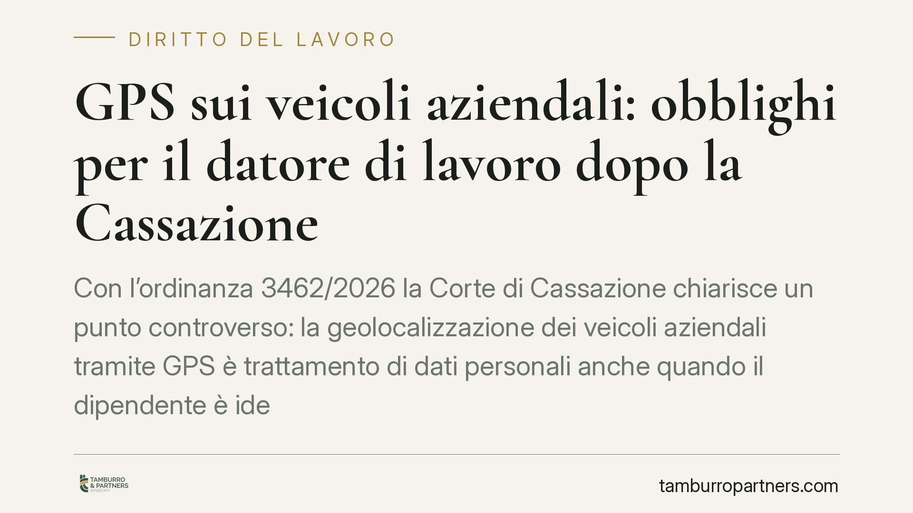

GPS sui veicoli aziendali: obblighi per il datore di lavoro dopo la Cassazione
Con l'ordinanza 3462/2026 la Corte di Cassazione chiarisce un punto controverso: la geolocalizzazione dei veicoli aziendali tramite GPS è trattamento di dati personali anche quando il dipendente è identificato solo in via indiretta. Ne discendono precisi obblighi per il datore di lavoro, dall'informativa privacy fino all'accordo sindacale o all'autorizzazione dell'Ispettorato del Lavoro.

Il caso
La questione riguarda i dispositivi GPS installati sui veicoli aziendali, in particolare quelli affidati agli autisti. Il datore di lavoro sosteneva che, non essendo il sistema collegato in modo diretto a uno specifico dipendente, non si trattasse di un trattamento di dati personali soggetto alle tutele lavoristiche.
La Corte di Cassazione, con l'ordinanza 3462/2026, ha respinto questa impostazione. Il punto centrale è che l'identificabilità del lavoratore non deve essere diretta: è sufficiente che sia possibile risalire alla persona incrociando la posizione del mezzo con i turni, le assegnazioni e altre informazioni già in possesso dell'azienda.
Inquadramento normativo
Il dato geografico di un veicolo diventa dato personale quando consente, anche indirettamente, di identificare chi lo guida. Lo prevede la nozione di dato personale del GDPR (Regolamento UE 2016/679), che include l'identificazione indiretta ottenuta combinando più elementi.
Una volta qualificata la geolocalizzazione come trattamento di dati dei dipendenti, si attiva l'art. 4 della L. 300/1970 (Statuto dei Lavoratori). La norma disciplina gli strumenti dai quali può derivare un controllo a distanza dell'attività lavorativa. Il GPS non può essere installato per finalità di mero controllo: è ammesso solo per esigenze organizzative, produttive, di sicurezza del lavoro o di tutela del patrimonio aziendale.
Anche in presenza di queste finalità, l'installazione non è libera. L'art. 4, comma 1, richiede in via alternativa:
- un accordo con le rappresentanze sindacali aziendali o unitarie;
- in mancanza di accordo, l'autorizzazione della sede territoriale dell'Ispettorato Nazionale del Lavoro (INL).
A ciò si aggiunge l'obbligo, previsto dal comma 3, di fornire ai lavoratori un'informativa adeguata sulle modalità d'uso degli strumenti e di controllo, nel rispetto della disciplina privacy (d.lgs. 196/2003 e GDPR). Va inoltre valutata la necessità di una valutazione d'impatto sulla protezione dei dati.
Implicazioni pratiche
La pronuncia chiude uno spazio di manovra su cui molte aziende avevano fatto affidamento. Non basta affermare che il GPS "segue il mezzo e non la persona": se dal veicolo si può risalire all'autista, le tutele scattano comunque.
Le conseguenze del mancato rispetto della procedura sono rilevanti. I dati raccolti in violazione dell'art. 4 sono inutilizzabili: non possono essere posti a fondamento di provvedimenti disciplinari, licenziamenti o contestazioni. A questo si sommano i profili sanzionatori in materia di protezione dei dati e il rischio di controllo da parte del Garante e dell'INL.
Per le imprese di trasporto e logistica, che utilizzano il GPS per pianificazione, sicurezza e tracciabilità delle consegne, la sentenza impone una verifica immediata dello stato di conformità dei sistemi già in uso.
Cosa fare in concreto
- Mappare i dispositivi esistenti. Verificate quali veicoli sono dotati di GPS, quali dati vengono raccolti e per quanto tempo sono conservati.
- Attivare la procedura ex art. 4. Stipulate l'accordo sindacale oppure, in sua assenza, richiedete l'autorizzazione all'Ispettorato del Lavoro competente per territorio.
- Aggiornare l'informativa. Consegnate ai dipendenti un'informativa chiara su finalità, modalità di controllo e conservazione dei dati di posizione.
- Effettuare la valutazione d'impatto. Predisponete la DPIA quando il trattamento presenta rischi elevati per i lavoratori, come nel monitoraggio sistematico della posizione.
- Verificare l'utilizzabilità del pregresso. Consigliamo di non fondare provvedimenti disciplinari su dati raccolti prima del completamento della procedura, per evitare l'inutilizzabilità.
Conclusione
L'ordinanza 3462/2026 conferma una linea consolidata: la tecnologia che segue il veicolo segue anche il lavoratore. La qualificazione del GPS come trattamento di dati personali, pur in caso di identificazione indiretta, obbliga il datore di lavoro a passare per le garanzie dell'art. 4 dello Statuto e della disciplina privacy. Un adeguamento tempestivo riduce il rischio di contenzioso e di sanzioni.
---
*Contributo informativo a cura di Tamburro & Partners - Avv. Giuseppe Tamburro. Non costituisce parere legale.*
Ogni storia di lavoro ha i suoi tempi.
Se gestisci HR e vuoi un confronto su contenzioso, ispezioni o licenziamenti, scrivi allo studio. Ti rispondiamo entro un giorno lavorativo.